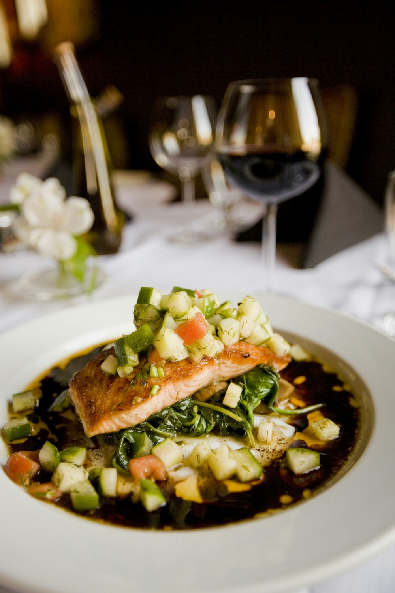
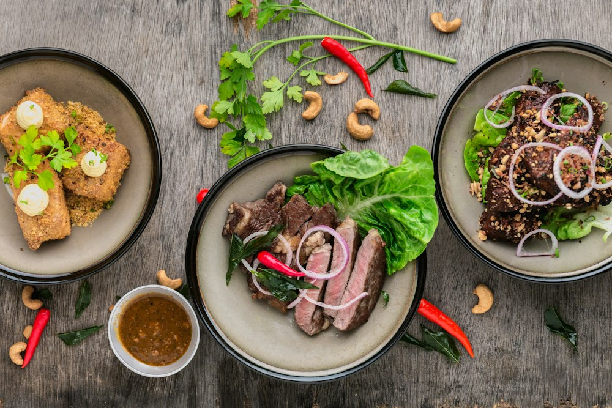
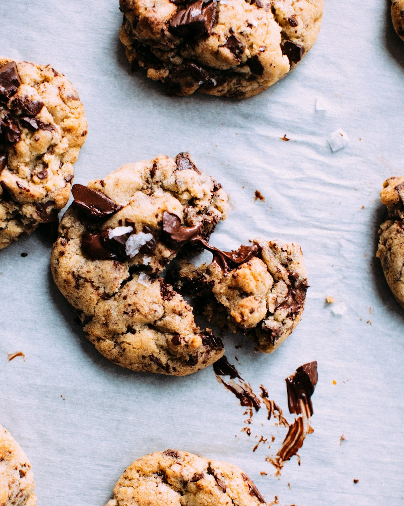
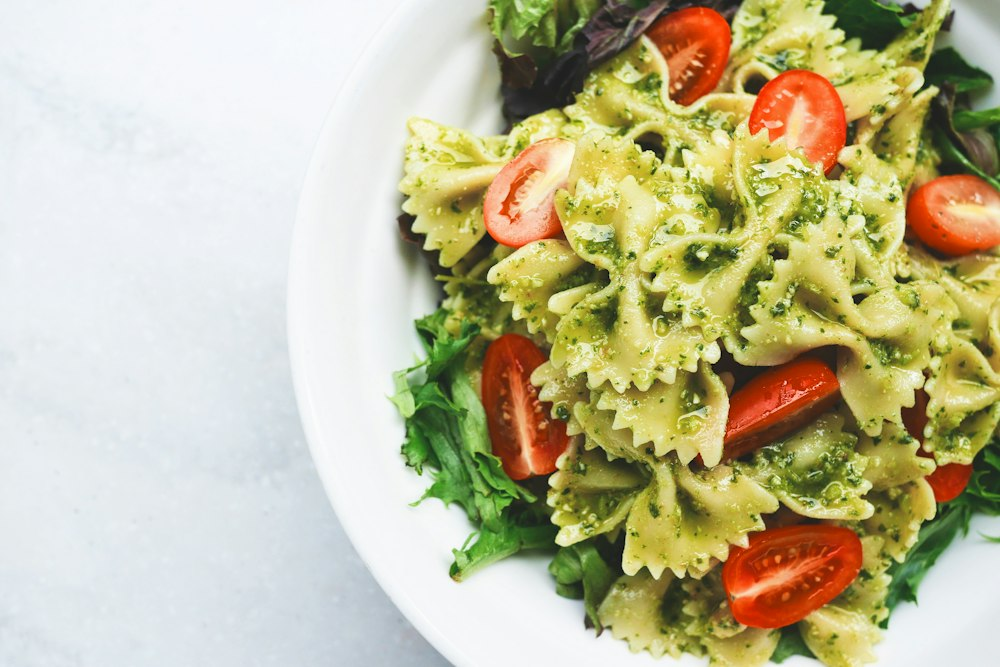

Discover
PlannedPublic recipes from every cook on Fork.
Newest first10 recipes

Priya Nair@priyabakes
Pan-Seared Salmon with Cucumber Salsa
25 minServes 2v2
Open recipe →
Why it differs from Cookbook: Discover is for browsing strangers' food, so the newest recipe leads large, the grid is three wide with more air, and every card names its cook first. Cookbook is your shelf: four wide, uniform, no owner line on your own recipes. Same card underneath. Only public recipes appear here.
@priyabakes

Charred Lemongrass Beef and Crispy Tofu Sharing Platter with Nuoc Cham and Toasted Cashews
@devcooks
Shakshuka
@devcooks

Beet and Feta Salad with Orange
@samlind

Salmon Poke Bowl
@chefmaria

Cardamom Cinnamon Buns with Brown Butter Glaze
@chefmaria

Weeknight Dal with Tarka
@samlind
Green Goddess Dressing
@chefmaria

Brown Butter Chocolate Chip Cookies
@chefmaria
